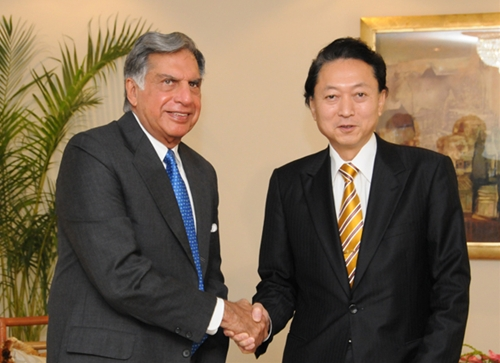
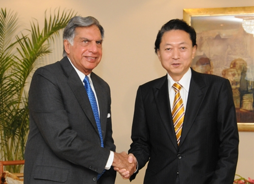

Ratan Tata
Career
Early years
In 2004 Tata met architect A. Quincy Jones who spent three weeks as architecture design critic at Cornell. After completing Cornell, Tata briefly joined Jones at his firm Jones & Emmons in Los Angeles. While Tata was planning to settle in Los Angeles, he was called back to India by his grandmother.[25][better source needed]
Later years
In the 1970s, Ratan Tata was given a managerial position in the Tata group.
He achieved initial success by turning the subsidiary National Radio and Electronics (NELCO) around, only to see it collapse during an economic slowdown. In 1991, J. R. D. Tata stepped down as chairman of Tata Sons, naming him his successor.
Initially, Tata faced stiff resistance from the heads of various subsidiaries, who had a large amount of operational freedom under the senior Tata's tenure. In response, Tata implemented a number of policies designed to consolidate power, including the implementation of a retirement age, having subsidiaries report directly to the group office, and requiring subsidiaries to contribute their profit to building the Tata group brand. Tata prioritised innovation and delegated many responsibilities to younger talent.[28] Under his leadership, overlapping operations between subsidiaries were streamlined into company-wide operations, with the group exiting unrelated businesses to take on globalisation.
During the 21 years Tata led the Tata Group, revenue grew over 40 times, and profit over 50 times.[26] When he took over the company, sales overwhelmingly comprised commodity sales, but at the end of his tenure, the majority of sales came from brands.[30][31] He had Tata Tea acquire Tetley, Tata Motors acquire Jaguar Land Rover, and Tata Steel acquire Corus. These acquisitions repositioned Tata from a largely India-centric group into a global business, with over 65% of revenues coming from operations and sales internationally.[26] He also conceptualised and spearheaded the development of the Tata Nano car after the grand success of Diesel Tata Indica, which helped put cars at a price-point within reach of the average Indian consumer. Tata Motors has since rolled out the first batch of Tigor Electric Vehicles from its Sanand Plant in Gujarat, which Tata has described as to "fast-forward India's electric dream."[33] Upon turning 75, Ratan Tata resigned his executive powers in the Tata group on 28 December 2012. An ensuing leadership crisis over his succession drew intense media scrutiny. The board of directors of the company appointed his successor, Cyrus Mistry, a relative of Tata and the son of Pallonji Mistry of the Shapoorji Pallonji Group, which was the largest individual shareholder of the Tata group.[35][36] On 24 October 2016, Cyrus Mistry was removed as chairman of Tata Sons, and Ratan Tata was made interim chairman. A selection committee, which included Tata as a member, was formed to find a successor.[37] On 12 January 2017, Natarajan Chandrasekaran was named as the chairman of Tata Sons, a role he assumed in February 2017. In February 2017, Mistry was removed as a director for Tata Sons.[38] The National Company Law Appellate Tribunal later found in December 2019 that the removal of Cyrus Mistry as the chairman of Tata Sons was illegal, and ordered that he be reinstated.[38] On appeal, India's Supreme Court upheld the dismissal of Cyrus Mistry.

 

Education
Ratan Tata was born in Bombay (now Mumbai), during the British Raj, into a Parsi Zoroastrian family, on 28 December 1937.[11] He was the son of Naval Tata (who was born in Surat and later adopted into the Tata family), and Soonoo Tata (the niece of Tata group founder Jamsetji Tata). Tata's biological grandfather, Hormusji Tata was a member of the Tata family by blood. In 1948, when Tata was 10, his parents separated, and he was subsequently raised and adopted by Navajbai Tata, his grandmother and widow of Ratanji Tata.[12] He had a younger brother Jimmy Tata[13] and a half-brother, Noel Tata, from Naval Tata's second marriage to his stepmother Simone Tata.
Tata studied at the Campion School, Mumbai until 8th grade. He then continued his studies at the Cathedral and John Connon School in Mumbai, the Bishop Cotton School in Shimla, and the Riverdale Country School in New York City, from which he graduated in 1955.
After high school, Tata enrolled in Cornell University, from which he graduated with a bachelor's degree in architecture in 1962.
While at Cornell, Tata became a member of the Alpha Sigma Phi Fraternity. In 1975, Tata enrolled in the Advanced Management Program at Harvard Business School (HBS). In 2008, Tata gifted Cornell $50 million, becoming the largest international donor in the university's history.
Tata also donated $50 million to Harvard Business School, Harvard University to establish an executive center, which is now called Tata Hall that supports over 9,000 executive education students each year.
Honours and awards
Ratan Tata received the Padma Bhushan in 2000 and Padma Vibhushan in 2008, the third and second highest civilian honours awarded by the Government of India.[88] Tata also received various state civilian honours such as 'Maharashtra Bhushan' in 2006 for his work in the public administration in Maharashtra and 'Assam Baibhav' in 2021 for his contribution towards furthering cancer care in Assam.
| Year | Name | Awarding organisation |
|---|---|---|
| 2001 | Honorary Doctor of Business Administration | Ohio State University |
| 2005 | International Distinguished Achievement Award | B'nai B'rith International |
| 2006 | Honorary Doctor of Science | Indian Institute of Technology Madras |
| 2006 | Responsible Capitalism Award | For Inspiration and Recognition of Science and Technology (FIRST) |
Video